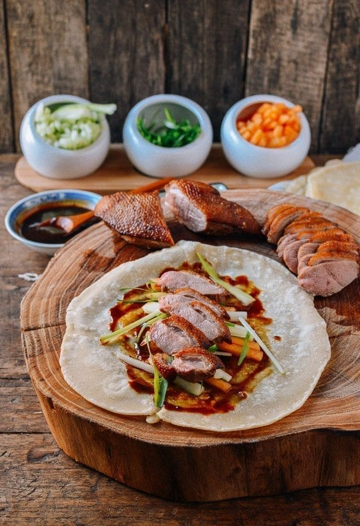

Peking Duck

Description
Peking Duck is a famous Chinese dish that originated in Beijing. It is prized for its crispy
skin and succulent meat. The duck is traditionally prepared by marinating it in a mixture of
spices, drying it, and then roasting it until the skin is golden and crispy. Peking Duck is
typically served with thin pancakes, scallions, cucumber, and hoisin sauce.
Ingredients
- Whole duck
- Chinese five-spice powder
- Soy sauce
- Honey
- Garlic
- Ginger
- Scallions
- Peking Duck pancakes
- Cucumber, thinly sliced
- Hoisin sauce
Steps
- Clean the duck and pat it dry.
- Prepare a marinade with Chinese five-spice powder, soy sauce, honey, garlic, and ginger.
- Marinate the duck overnight or for at least a few hours.
- Hang the duck to dry for several hours or overnight.
- Roast the duck in a hot oven until the skin is golden and crispy.
- Carve the duck into thin slices and serve with Peking Duck pancakes, sliced scallions, cucumber, and hoisin sauce.